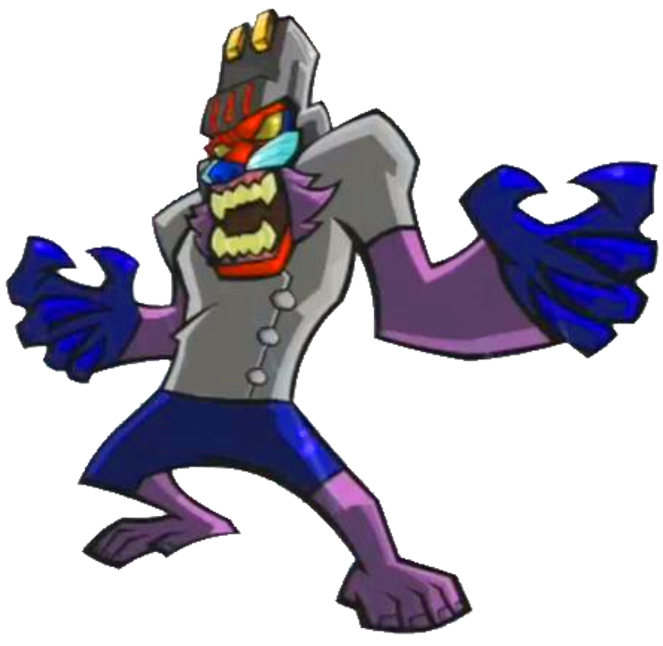

Biografical overview of the main characters in Sly 3.
Sly was born to a long line of famous thieves and rogues, in a loving family. However, his parents were killed by the Fiendish Five and Sly ended up in an orphanage. Here, he met Bentley and Murray, and they started the Cooper gang. Sly and his gang stole multiple times throughout their lives, consentrating on stealing from other criminals, and came at some point on the trace of the Fiendish Five. They took their revenge on Clockwork, a metalic bird, and his gang by getting them arrested and Clockwork killed. However, the parts of Clockwork was stolen by multiple different people and used to further these guys criminal activities. Sly and the gang then set out to get the parts back and in the end manages to distroy them once and for all. Then the Cooper gang finds and opens the Cooper vault and Sly ends up losing his memory and joins Carmelita as a policeman. However, it is hinted that this is just an act and that he actually remembers everything.
As a young turtle living with his family in the swamp he called home, Bentley wandered away from his siblings due to his nearsightedness. Someone found him and delivered him to the Happy Camper Orphanage. He quickly became friends with Murray and Sly when they arrived. Helping Sly and Murray from behind the scenes, Bentley was essential to the gang's exploits. Bentley did most of the planning and explosivs work of their heists. Two years after Clockwerk's defeat, Bentley ventured out into the field for the first time as part of the Cooper gang's heist to steal the Clockwerk parts from the Museum of Natural History. He disabled security systems and provided intel for Sly to make his way through the museum. After finding out that the Clockwerk parts had already been stolen, Bentley fled with Sly and Murray as they were pursued by Carmelita Fox and her new partner. During the second fight with the now resurrected Clockwork, Bentley was essential in fieldwork, but Bentley's injuries left him unable to walk. Bentley was hospitalized in order to recover from his ordeal. However, he was busted out of the hospital when the gang needed him once more to hunt the Cooper vault. Finally, after the Sly fakes his amnesia, Bentley enters a relationship with Penelope and keeps an eye on Sly from afar.
Murray was orphaned at a young age and raised at the Happy Camper Orphanage, where he met Sly and Bentley. At some point during his youth, Murray learned how to drive by hot-wiring cars. He later got a job as a pizza delivery boy but was fired after dropping too many pizzas. After coming of age, Murray accompanied Sly and Bentley around the world to defeat the Fiendish Five, who had killed Sly's father and stolen the pages of the Thievius Raccoonus. Though he mainly acted as the team's getaway driver. Two years after defeating Clockwerk, the Cooper Gang learned that the Clockwerk parts were being held on display at the Museum of Natural History in Cairo. Murray went with the rest of the gang in an attempt to steal the parts so that Clockwerk would never have a chance to be resurrected. However, by the time the gang made it to the museum, the parts had already been stolen the night before. At the end of the mission to get back the Clockwork parts, Murray held open Clock-La's mouth to allow Bentley to remove Clock-La's Hate Chip. Unfortunately, right after Bentley got the chip off Clock-La, her beak unexpectedly closed on Bentley. Shocked, Murray freed Bentley from the beak, only to find out that Bentley was now crippled. Murray blamed himself, and decided to leave the gang and travel the world. He was recruited back in the gang in Venice, and helped the gang get to the Cooper vault. After Sly's amnesia, he became a race driver.

Dr. M was once a member of Sly's fathers Cooper Gang. Much like Bentley in the current Cooper Gang, Dr. M was the group's technical specialist. The trio was very successful and together, they amassed a large fortune. Most of this wealth went into the Cooper Vault for safekeeping. After some time, Dr. M began to feel that he was nothing more than a sidekick. Angered, he left the group and eventually took up residence on Kaine Island, the location of the Cooper Vault, where he attempted to break in and steal the Cooper fortune, believing it to be rightfully his. However, despite the use of a variety of drills and other such excavation equipment over the course of many years, he was unable to breach the vault. He grew more and more paranoid as time passed, causing him to create a fortified fortress whose security was equal to that of Fort Knox, as well as a legion of mutants to serve as guards, including some large monsters. When Sly Cooper and the Cooper Gang arrived on Kaine Island, they attempted to get past Dr. M's defenses to reach the vault. Unfortunately, his intellect proved too much for them, as he stopped them from opening the vault and confronted Sly who he initially mistook for his father until he realized otherwise. He demanded the Cooper cane but was rejected and a fight broke out which ended with the item being lost. The Guru and Dimitri Lousteau both tried to recover it, but Dr. M was able to retrieve it first, using a mutated sea creature. Later, when Penelope eliminated his air defenses, Dr. M took control of a giant whale-dragonfly hybrid to attack Sly in his biplane. He revealed his history to Sly, and seemingly lost the cane. In reality, he had attached a tracking device to it, allowing him to track Sly's movements through the vault. Going after him, Dr. M and his men had a brief confrontation with Murray and Bentley, where Dr. M talked to the latter, telling him he knows how Bentley feels: a sidekick despite being intellectually superior. Bentley admits that he is smarter than Murray and Sly, but he has something that Dr. M never had: a brotherly love with his two companions. Realizing he can never talk through to Bentley, Dr. M fought him and Murray, but was defeated. Nevertheless, he still managed to follow Sly into the vault thanks to the tracker he placed on his cane. Dr. M later engaged Sly in a final battle while wearing a helmet with spider-like limbs, with Sly beating him to the edge of defeat. Sly then tried to convince him that not all Coopers were bad, giving him an example on how he and Bentley's relationship worked. Dr. M was confused as Sly's father was "never much of a good friend". Sly then said that all Coopers were different, even if they had the same bloodline. Though, Dr. M refused to believe this was all true and declared the Coopers to be all the same: nothing but a family of "dirty, attention-grubbing thieves". At this time, Carmelita Fox broke her way into the vault. Seeing how Sly and Carmelita felt towards each other, Dr. M took a shot at Carmelita, only for Sly to willingly take the hit. Carmelita then incapacitated Dr. M. Minutes later, despite finally seeing the Cooper treasure with his own eyes, he refused to leave the site as he spent his life searching for it. Dr. M was then killed in the collapse of the cavern. Unwittingly, he facilitated Sly's relationship with Carmelita, allowing him to feign amnesia.
Although the Guru's home was a small hut in Yuendumu, Australia, he spent most of his time meditating inside a nearby cave. He studied the mystic arts of the Dreamtime and was also the guardian of the malevolent Mask of Dark Earth, which dwelled deep underground. The Guru was visited one day by Murray, who wanted to find his "spiritual center." The Guru agreed to teach Murray in the art of the Dreamtime and sent him to locations all over the globe as part of his training. He also taught him the Aboriginal Ball Form and potentially the Temporal Lock. The next location the Guru sent Murray to was Venice, Italy, where he tasked his student with remaining there until "the black water ran pure." This black water was actually the tar-polluted water around Venice caused by Octavio. While Murray was completing his assignment, miners arrived in the outback and began excavating opals. They deployed a gyro-copter that honed in on the Guru's Moon Stone and captured him. The miners' excavations disturbed the Mask of Dark Earth which, unguarded, escaped from the caves. Without his Walking Staff and Moon Stone, the Guru was powerless to escape from his stockade prison and could only watch as the miners tore up the landscape. While the Guru was imprisoned, Sly Cooper showed up to break him out. The Guru refused to leave his prison until his equipment was returned to him. He also requested that Bentley and Murray meet with him individually. Murray was the first to meet with the Guru. He told his teacher that he had accomplished his task back in Venice and wanted to rejoin the Cooper Gang. Murray also expressed his hopes of the Guru coming along with them. The Guru replied by explaining his current situation with the Mask of Dark Earth and the miners – that only when these two adversaries were dealt with would he join the gang. Later, Bentley visited the Guru and returned his equipment to him. When Bentley asked how the Guru planned to escape from his stockade, the Guru displayed to Bentley his ability to transform and take control of others. Once he had broken out, the Guru set out to destroy the miners' machines that were tearing up the landscape. During the final phase of the Cooper Gang's operation, Moon Crash, the Guru destroyed the miners' gyro-copter. He also spotted out the Mask of Dark Earth to Murray (who was disguised as the Moon Spirit). When the gang failed to destroy the mask, it took control of Carmelita Fox; however, Sly was able to get the mask off of Carmelita and it was destroyed. The Guru and the Gang watched over Carmelita as she recovered. As Carmelita began to stir, the Cooper Gang made a hasty retreat. With the Mask of Dark Earth destroyed, the miners gone, and the Guru's home at peace once again, he followed the gang on their travels and was recognized as a new member of the team. As the Cooper Gang's mystic, the Guru aided them as a valuable ally during their operations in Holland. His missions involved assisting the gang in breaking into one of the Belgian supply trucks and possessing a giant wolf within the area to thin out the Black Baron's guards. In China, he assisted Sly in retrieving Bentley's computer back from General Tsao using his telekinetic abilities. During their fight against Captain LeFwee in Blood Bath Bay, the Guru used his abilities to control the Crusher, effectively turning it against the pirate captain. Finally, as they began their final heist at Kaine Island to gain access to the Cooper Vault, the Guru possessed numerous sharks to destroy a magnetic buoy that the cane had clung onto. After the disbandment of the Cooper Gang, he took on new students, a rock band called "The Oscars," for his Dreamtime course. However, he was subsequently annoyed by the attention they attracted and so, along with the band, fled to New York in order to escape the media, figuring "it was the last place they'd ever look".
Nothing is known about Penelope's life before she attempted to join the dog-fighting league. When she tried to join the league, she was denied due to her young age. In order to bypass the age restriction, she created a false identity called the Black Baron, an infamous dog-fighter. Online, she still identified as Penelope, but no one was the wiser about her double life. As the Black Baron, Penelope became a celebrity in the dog-fighting world. She was a skilled pilot, and eventually created the annual ACES competition in an effort to attract more worthy opponents. Every year she would win the competition by normal means or, in the event of her near loss, by using her large gunships to shoot down the near victor. When the Cooper Gang met Penelope online, they expressed their interest in a specialist with remote-controlled inventions, something that Penelope was also very adept with. She gave false information, claiming to be one the Black Baron's mechanics, but told the Gang that if they wanted her on the team, they'd have to beat the Black Baron in the upcoming ACES competition. She uploaded an edited image of herself, to match Bentley's fake image, igniting Bentley's romantic interest in her. The Gang accepted her challenge and traveled to Holland. Some time before the ACES Semifinals, Bentley contacted Penelope via ham radio and requested her help in defending the Cooper Hangar from Muggshot and members of the Baron's staff whom he had bribed, as they attempted to destroy their plane. Penelope, who was against cheating between teams, fully supported the Gang in defending the hangar. During the Finals of the competition, Sly Cooper managed to nearly destroy the Black Baron's biplane, so the Baron called in his gunships and a passenger plane for backup. Bentley, having anticipated the gunships, utilized the nearby windmills to destroy them, and Sly battled the Black Baron on the left wing of the plane. The mask of the costume was destroyed and Penelope was revealed to be inside it. She later explained the purpose of the suit, and joined the Cooper Gang without hesitation. Between the events of joining the Cooper Gang and the Vault heist, Penelope assisted in recruiting two more members to the Gang—the Panda King and Dimitri Lousteau—through the use of her RC devices. In China, she showed early signs of attraction towards Sly and his athletic ability. Bentley recognizes this and it causes some resentment between him and his oblivious friend. While recruiting the Panda King, she was captured by General Tsao's Stone Dragon, which Sly managed to free Penelope from, causing her feelings to grow. She was later captured by Captain LeFwee, who had planned to make Penelope his wife until the Gang intervened. Penelope even demonstrated her ability in sword dueling against LeFwee on his ship's mast, the latter of whom lost and fell to the ocean. She also realized that she held strong feelings for Bentley, leading her to heroically save him and become his girlfriend. As part of the heist, Penelope was crucial to eliminating the threat of guards in Sly's path as he climbed his way towards the Cooper Vault. After the heist failed, Penelope utilized her RC car to destroy the nearby radar towers; had she not, Sly—who later used his biplane to clear the skies of enemy fire—would have been under attack by homing missiles. After the heist was a success and the Cooper Gang disbanded, Penelope remained with Bentley and worked with him on a number of inventions.
Born into poverty, Panda King was fascinated by the fireworks set off by rich noblemen every New Year. After spending a decade learning the art, he attempted to offer his fireworks to the noblemen. However, the noblemen could not see past his shabby clothes and low status and therefore drove him away. Enraged and humiliated, the Panda King used the tools of his art for crime by destroying villages and homes throughout the country, becoming feared by the very people who cast him aside. Subsequently, he was recruited by the Fiendish Five as their demolitions expert. At some point in his earlier life, the Panda King fathered a daughter named Jing. Jing has an aunt, though her name is never mentioned and it is never established if she is the Panda King's sister or sister-in-law. The Panda King took part in the Fiendish Five's raid on the Cooper home. After acquiring the blueprints of Otto van Cooper, he set up shop in the Kunlun Mountains of western China. He built a massive explosives factory, disguising it as a large temple-like facility. In order to finance his crimes, the Panda King would pressure local villages to pay him in return for avalanche protection. If they refused to pay, he would use his fireworks to bury the villages in snow. Ten years after the attack on the Cooper home, the Panda King had developed a new fighting style known as Flame-Fu, which blended martial arts with fireworks. He perfected it just as Sly Cooper infiltrated his stronghold. The Panda King knew that Sly had come for revenge and to take back the Thievius Raccoonus but questioned him as to why he cared about ending his avalanche protection scheme. The Panda King was enraged when, in response, Sly called him a "frustrated firework artist turned homicidal pyromaniac." He began to unleash his moves on Sly, promising to kill him with the majesty of Flame-Fu; however, he was no match for the Cooper and was defeated. Once Sly retrieved the Panda King's section of the Thievius Raccoonus and left, the Panda King was arrested by Inspector Carmelita Fox. After getting out of prison through unknown means, the Panda King returned home. However, he still held a grudge against Sly for humiliating him. When his daughter was abducted by General Tsao, the Panda King was forced into exile. During this time, he became a monk and lived in seclusion. When the Cooper Gang was in need of a demolitions expert for the Cooper Vault job, they sought out the Panda King to recruit him. Both Sly and the Panda King were against this: Sly because the Panda King had helped the Fiendish Five kill his father, and the Panda King because Sly had humiliated him. However, the Panda King had taken a liking to the Guru, and he decided to make a deal with the Gang: they would help him rescue his daughter and in return, he would join them for the Cooper Vault heist. After he had formed an alliance with the Cooper Gang, the Panda King helped Murray recover the Cooper Van by providing cover fire as Murray pulled the van towards the safe house. It was this incident that strengthened the Panda King's resolve to save Jing King, as Murray's love for his van reminded the Panda King of his daughter and him. The Panda King's first job with the Cooper Gang involved helping Sly defeat Tsao's army of hopping vampires. At this time, he came into conflict with his criminal side, a yin-yang split personality that took the part of yin ("dark"). He reconciled with his other half to save his daughter, despite the other's wishes to kill Sly, by convincing his other side that they could learn humility from Sly (who was willing to work with the Panda King despite his role in killing his parents). Once Jing King was rescued, the Panda King left her with her aunt while he paid off his debt to Sly and the rest of the gang. He would subsequently help them battle the sea monster Crusher, and utilize his fireworks on Kaine Island to help Sly, Bentley and Murray access the Cooper Vault. After the Cooper Vault heist and disbandment of the Cooper Gang, the Panda King returned home, retired, and moved in two doors down from his daughter. Fearing another General Tsao incident, she allowed him to screen all her suitors, and as of then was still unmarried, since even the bravest of suitors were scared off by the stony, short-tempered Panda King.

Dimitri grew up listening to stories of his grandfather, Reme Lousteau, recovering treasure from pirate ship wrecks. He learned English by listening to music videos and mimicking their speech. His life of crime began when he was a passionate young art student. He developed his own style, dubbed "kinetic aesthetic," which consisted of him swinging back and forth from a rope tied around his waist and painting the canvas as he swung by. It was rejected outright by closed-minded critics and Dimitri was cast out of the artistic community. Infuriated, he began forging old masterpieces, which was his idea of punishing those with bad taste. At some point, Dimitri came into ownership of a nightclub located on the west-side of Paris, drawing in "chic, young patrons from far and wide." Dimitri pretended to be in love with an art aficionado, Madame D'Oinkeau, so that she would propose to him, with the engagement gift being the Venus de Whalo, a valuable art statue in her possession. Dimitri planned to sell the statue once it was given to him. The statue was put on display during a party at Dimitri's mansion in Monaco. During the party, Dimitri had some of his men forging paintings in the mansion's attic. To ensure that the Venus de Whalo was safe, D'Oinkeau invited Inspector Carmelita Fox to protect it, much to Dimitri's chagrin. D'Oinkeau showed Carmelita the Venus de Whalo, with Dimitri in tow. While viewing the statue, three guards informed D'Oinkeau that Sly Cooper, a well known thief, was spotted in the attic. Carmelita rushed to the attic and Dimitri, fearing that he would be found out, tried to stop her. Failing to do so, he told both Carmelita and D'Oinkeau that he would check on the party to make sure that everything was "grooving." Carmelita did not find Sly, but found all of Dimitri's men knocked out along with their forging equipment. While both women were in the attic, Dimitri made his escape from the party, leaving the statue behind. It was then stolen by Sly and his gang. At some point, Dimitri became a member of the criminal group known as the Klaww Gang. When the Klaww Gang stole the Clockwerk parts from Cairo's Museum of Natural History, Dimitri was given the tail feathers for his own use. He modified the tail feathers into printing plates; with their unique metal alloy, Dimitri was able to print an endless supply of counterfeited money. He hid the "printing press room" underneath his nightclub. Meanwhile, he used the nightclub to funnel illegal spice sent from Rajan into the population; in doing so, Dimitri contributed greatly to the Klaww Gang's and Arpeggio's plans. Dimitri soon learned that Sly Cooper and his team had arrived in Paris looking to steal Clockwerk's tail feathers. After several acts of sabotage by the Cooper Gang, Dimitri ordered his guards to shoot them on sight. Dimitri's efforts to get rid of the Cooper Gang were proven to be unsuccessful when Sly confronted him in his printing press room. Dimitri tried to get Sly to leave him alone by bribing him with large stacks of counterfeit cash, but Sly, befuddled by Dimitri's strange English, refused the bribe and insulted his suit. Enraged, Dimitri challenged Sly to a fight, but was defeated when Sly knocked him into the printing press machine, breaking it. Admitting his defeat, Dimitri told Sly to take the Clockwerk tail feathers and his counterfeiting operation as it was past tense. Sly responded that he was doing Dimitri a favor, as there was no honor in a thief that prints money. Dimitri muttered: "You...cracker box!" before passing out as Sly took Clockwerk's tail feathers. Dimitri was then arrested by Carmelita Fox and Constable Neyla, and had his nightclub shut down. After his incarceration, Dimitri became a dance instructor on a cruise ship. However, for reasons unknown, Dimitri ended up in jail again and was kept in the Venetian police headquarters, under the watch of Carmelita Fox. During his time there, he was visited by Sly Cooper, who was looking for Murray (who had left the gang). Dimitri still held a grudge against Sly for ruining him and nearly got the police's attention. Fortunately, Sly kept him quiet by cutting a deal. Sly arranged for Dimitri to escape while he kept Carmelita busy outside. In return, Dimitri alerted Murray to the presence of his friends in Venice, thus facilitating the Cooper Gang's reassembly. After escaping Venice, Dimitri got a job as an announcer for the annual ACES competition in the Netherlands. He was somewhat frightened of the Black Baron, who was in charge of the competition as well as a participant. The night before the competition began, Dimitri was working as a hotel bartender. Sly, who had entered the competition, found Dimitri and requested that he help the Cooper Gang locate the roster for the competition, so that Team Cooper would have a heads up on who they would be flying against and could enact sabotage. At first, Dimitri resisted, but after being pressured, the marine iguana agreed, but only if the gang promised to owe him a favor later on. Sly agreed to the favor, and Dimitri revealed the location of the flight roster to be a safe behind a painting within the Black Baron's hangar. During the semi-finals of the competition, Dimitri provided commentary and announced Team Cooper's victory over teams Belgium and Iceland. Weeks after the ACES competition, Dimitri contacted Bentley via ThiefNet and called in the favor that he had been promised. He booked the entire Cooper Gang passage under assumed identities to Blood Bath Bay in the Caribbean. On the way there, he told the group about his grandfather Reme Lousteau, who was a deep sea diver that looted shipwrecks. However, after losing the gear to a pirate known as Black Spot Pete, Reme retired from diving and eventually began a family. Having grown up on the stories, Dimitri vowed to reclaim the gear with the help of the gang. The Cooper Gang soon learned that the diving gear was buried on Dagger Island, to where Dimitri accompanied them. Once the treasure was found and dug up, Dimitri examined the gear while proudly commenting on his grandfather's craftsmanship. Before the Cooper Gang could take the gold that was buried with the diving gear, a pirate named Captain LeFwee showed up. Taking Penelope, another member of the gang, as a hostage, he ordered them to leave the gold and go back to their ship. Now that Dimitri had recovered his grandfather's diving gear, the Cooper Gang's only objective was to rescue Penelope. Dimitri assisted them in this by using his new suit to venture into the sea and collect several blast amplification collars, which would strengthen their ship's cannons and make it easier to damage LeFwee's ship. After LeFwee was defeated and Penelope rescued, Dimitri decided to join Cooper Gang and aid them in the Cooper Vault heist as their frogman, even though nobody really asked him. When the Cooper Gang arrived on Kaine Island for the Cooper Vault heist, Dimitri stationed himself in the waters surrounding Dr. M's lab. When Sly arrived at the lab during the initial approach, Dimitri used his spear gun to destroy the security blocking his path. After the heist failed and Sly was injured by Dr. M's mutant, Dimitri attempted to retrieve Sly's cane when it fell into the ocean - which was caused when The Guru detached it from an electromagnetic buoy it had been caught on. Underwater, he pursued the cane as it traveled through a current. At the end of the current, he encountered Dr. M on his mutant angler fish. Dimitri defeated the creature with his spear gun, but failed to get the cane from him. After the Cooper Gang disbanded due to Sly's "amnesia" post-heist, Dimitri became a professional skin diver and was very popular among women. He sent Bentley a postcard in which he wrote: "I'm here, wish you were fine.... like me"
Carmelita is a fourth-generation member of law enforcement. At a young age, she studied at Sleuth Academy and graduated at the top of her class. After graduating from the Police Academy with honors, she began working for the Investigative Services Division of INTERPOL. Her boss and mentor was Inspector James Barkley. At an unknown point in her career, Carmelita became acquainted with Constable Neyla and The Contessa. When Inspector Barkley was nearing retirement, he wanted to know he was passing his department into the right hands. Therefore, he gave Carmelita, his rookie protegee and the number one candidate for the job, the task of securing the Parisian Opera House and protecting the Diva Diamond, a jewel owned by opera singer Pachyderma Tuskinanny. While patrolling the roof, Carmelita found a raccoon looking at a map and overlooking the city. His name was Sly Cooper. Assuming the worst, she called for some guards to apprehend Sly, though he easily beat them all before finally being subdued. Seeing the intruder face to face, she was taken back by how attractive he was. Sly was then put in the janitor's closet, but he eventually escaped and when Barkley found out, he yelled at Carmelita, blaming her for his escape. Angry about how the intruder had made her look the fool in front of her boss, she stormed off in search of him. She searched backstage for any traces of the raccoon. While investigating, she heard a commotion around the corner from her position, but when she inspected it, there was nobody there. On the opera's stage, Pachyderma was wailing over the fact that the Diva Diamond was stolen. Barkley screamed at Carmelita at the top of his lungs, reducing her to tears. Out of nowhere, a man fell from the air above them; he had been tied up suspended by a rope and had a paper bag over his head. Carmelita removed the bag to find Pierre, the stage manager, with the Diva Diamond around his neck. Inside the bag, Carmelita found a calling card from Sly, which revealed the identity of the intruder. For securing the opera house, protecting the Diva Diamond and arresting Pierre, Carmelita was given a promotion by Barkley. This would be the first time of many that she and Sly would encounter each other. Carmelita appeared to stop Sly from escaping with an INTERPOL file on the Fiendish Five. After Sly's escape, she pursued him to each of the Fiendish Five members' locations, her first captive being Sir Raleigh. She later tracked Sly down in Mesa City, pursuing him once again but ultimately failing to capture him. She went on to apprehend the criminals known as Muggshot and Mz. Ruby, before pursuing Sly once more in the Kunlun Mountains. Of course, she failed to capture the Cooper Gang but did not miss her chance to arrest the Panda King in compensation for this loss. During the gang's mission in Russia, Carmelita sneaked into Clockwerk's base of operations ahead of them with her jetpack. She was captured and held prisoner within Clockwerk's gas chamber but was subsequently freed by Sly during his infiltration of the headquarters. Agreeing to the terms of a temporary truce, Carmelita aided him in his final war against Clockwerk during their battle above the Krakarov Volcano. She gave him cover-fire when he dashed to retrieve his cane by venturing into Clockwerk's installation. Carmelita then offered her jet-pack to him when he went to finish Clockwerk off and further assisted in the battle by shooting holes within the owl's interior design, allowing Sly to fire in the weak spots that formed as a result. Once Clockwerk was defeated, Carmelita confronted Sly on a catwalk above the volcano crater. True to her word, she gave Sly the promised ten-second head start. However, Sly preferred to wait until the last second and took Carmelita by surprise by kissing her on the lips. Despite greatly enjoying the kiss, Carmelita was enraged immediately after discovering that the distraction had allowed Sly and his gang to escape arrest by handcuffing her to the catwalk railing, but she later freed herself (as seen in the Japanese version of the ending). When Sly ventured into the Museum of Natural History in Cairo in search for the remaining Clockwerk Parts, Carmelita intervened along with Constable Neyla, whom she had allowed to partner-up with her as a mere favor to the high-ranking Contessa. She failed to capture Sly, being distracted by Neyla's accusations against her obsession with him. Carmelita later arrived in Paris, and, enraged at missing her opportunity to arrest the Cooper Gang, vented out all of her frustrations on an unfortunate Dimitri. During her operation in India, Carmelita danced with Sly at Rajan's ball, unwittingly serving as the perfect distraction to aid in the Cooper Gang's theft of the Clockwerk Wings. Upon discovering her dance partner's true identity, Carmelita blew her cover and disrupted the entire party, making numerous arrests and forcing Rajan to flee into obscurity in order to escape arrest. Later, when Neyla succeeded in capturing Rajan and betrayed the Cooper Gang, Carmelita was framed as an accomplice of the Cooper Gang, resulting in her arrest at the hands of the Contessa. Carmelita was later found by Sly within the Contessa's castle, being confined to an Iron Tech 250, hours away from being brainwashed by a Mind Shuffler (which was amplified by the Clockwerk eyes). Essentially, the Contessa intended to have Carmelita take the fall for her at INTERPOL by brainwashing her into an obedient slave of hers, but the INTERPOL agent was freed by the Cooper Gang before she could succumb to hypnosis. Seeking vengeance on the Contessa, she proved quite a nuisance in both her and the gang's plans, shooting down a blimp that Bentley had boarded. Carmelita acquired the Clockwerk Eye that Bentley had recovered, only to lose it to Murray. She was soon forced to turn to Sly and the others for aid in escaping Neyla's forces. Carmelita later showed up in the heart of Jean Bison's train operation, capturing Murray in her efforts to place the remainder of the gang into custody. She failed and was once again forced to flee from INTERPOL forces. Sly tried to think of a way to clear her name, some way other than turning himself in. Somehow acquiring a helicopter, Carmelita joined forces with Sly to battle Neyla after her betrayal of Arpeggio and subsequent merging with the Clockwerk frame, thus becoming Clock-La. Once Clock-La was defeated, Carmelita took her final vengeance upon Neyla by crushing the Hate Chip, which had empowered Clock-La, causing the Clockwerk Parts to disintegrate and crushing Neyla to pieces. In an ironic twist of fate, Carmelita ended the menace of Clockwerk and became the savior of the future generations of the Cooper Clan. Aware that his weary – and in Bentley's case, injured – comrades had no hope of escaping, Sly turned himself over to Carmelita in exchange for their freedom. Due to this, Carmelita was reinstated as an INTERPOL agent with an additional promotion by Inspector Barkley when the forces arrived to clean up the site. While on board an INTERPOL helicopter, Carmelita and Sly began to converse over their previous adventures. This conversation soon evolved into a discussion of their shared interests, and became the equivalent of a first date between the two. Carmelita even showed Sly the bottle of champagne she had been saving for the special occasion of his arrest. However, the moment ended when Carmelita realized that their flight seemed to be prolonged, something that Sly also noticed when he saw the Eiffel Tower floating by a grand total of seventeen times. Investigating, Carmelita discovered that Bentley and Murray had done Sly one last favor before their departure, and the raccoon managed to escape capture once again, gliding away from the helicopter. She yelled, "I'll find you, Cooper!" as Sly drifted away on his paraglider. She then calmly says "I'll be seeing you soon, ringtail." (This is the only time in the series that any of the characters openly speaks in a cinematic.) When Carmelita went back to her office, she finds the same bottle of champagne left by Sly on her desk. She then continues to search for Sly, whose current whereabouts are still unknown. Carmelita was analyzing some camera footage of a recent robbery Sly had tried to pull off. Confused as to the motives of Sly and Murray's clumsiness during the heist, she soon retired into slumber. Sly later broke into the room to steal back the map he had tried to loot in the first place. Carmelita suddenly awoke to his presence, shock pistol in hand and prepared to take down the raccoon. She taunts him for his clumsiness, but is infuriated when he manages to escape from her with the map to his family's fortune. Carmelita then proceeds to round up a group of mercenaries and swears to capture Sly once and for all. Carmelita encountered Sly in Venice, where she is investigating a tar crisis linked to local mob boss Octavio. Octavio hires the Blue Viper Gondola Gang to terminate Carmelita, but their attempt is thwarted by Sly and Bentley; however, Carmelita is oblivious to this deed. Carmelita unknowingly aided the Cooper Gang by defeating a great number of Octavio's thugs. She arrests Octavio after Murray defeats him. Following the gang to the Australian outback, Carmelita became possessed by the Mask of Dark Earth during the gang's final operation. Bentley attempted to sedate the possessed Carmelita with multiple shots from his sleep darts. Unfortunately, the dart's chemicals interacted with the Mask of Dark Earth's evil properties, which caused a chemical reaction within Carmelita's body. This caused her to grow to the size of a giant. Sly eventually managed to revert Carmelita back to her normal form by climbing up her bootlaces and removing the mask, while the INTERPOL forces in the area landed the final blow on the Mask of Dark Earth, in exchange for their own lives. Sly and the gang cared for the dazed Carmelita following the aftermath of the incident and provided her with some "photographic evidence" using her camera. Carmelita returned in Kinderdijk, chasing Sly in the background of the ACES biplane tournament. After yet another chase, which was purposely orchestrated by Sly and Bentley, Carmelita engaged Muggshot in battle, defeating him and sending the criminal back to prison. Later, she pursued the gang to China, where her shock pistols were necessary in order to charge a battery required for the recently recovered team van. Lured into General Tsao's palace, she overheard a false ploy concocted by Sly and Bentley to steal away Tsao's intended bride-to-be. Seeking to trap Sly, Carmelita snuck into the bride's dressing room and donned a ceremonial wedding outfit as a disguise. After Sly and the gang defeated the Stone Dragon summoned by Tsao, the wedding occurred, where Carmelita revealed herself and used her pistol to knock out Tsao. Though surprised at arresting Tsao instead of Sly, Carmelita still took the emperor into custody. Carmelita failed to track the gang during their war against Captain LeFwee in Blood Bath Bay. This was addressed by Sly, who sent her a pirate postcard. However, she and her squad of mercenaries arrived on Kaine Island to discover Sly in the grip of Dr. M's monster. She engaged the genetic mutate in combat and proceeded to assist Sly in his final showdown with Dr. M. Weakened by the battle with Sly, the crazed doctor attempted to fire a laser blast at her. However, Sly sprung in front of the blast, saving Carmelita. After Carmelita finished Dr. M off, she discovered that Sly had developed amnesia from the blast's impact. Carmelita took him with her, convincing him that he was her partner, Constable Cooper. She appeared in the end credits of the game, standing hand in hand with Sly on a balcony in the Parisian landscape. While Bentley watches from a distance with his binocucom, Sly glances at him and winks, thus implying that he was faking his memory loss in order to develop his relationship with Carmelita.